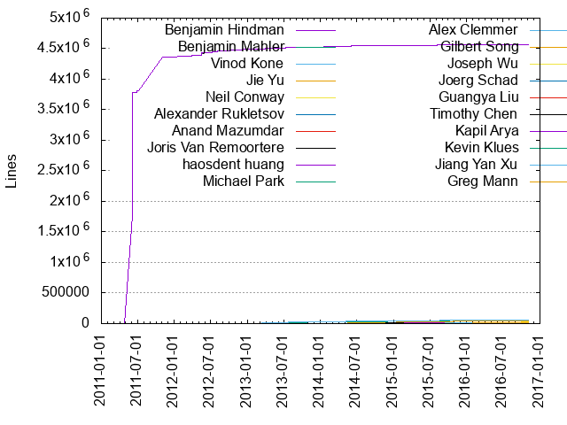
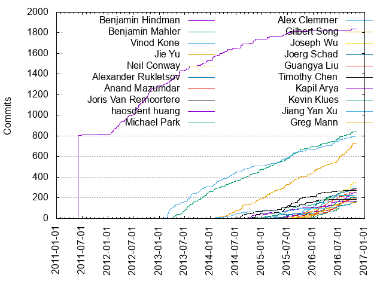

Authors
| Author | Commits (%) | + lines | - lines | First commit | Last commit | Age | Active days | # by commits |
|---|
| Benjamin Hindman | 1839 (17.87%) | 4569112 | 4394073 | 2011-06-05 | 2016-10-03 | 1947 days, 0:09:34 | 296 | 1 |
| Benjamin Mahler | 840 (8.16%) | 56924 | 39382 | 2013-03-29 | 2016-10-13 | 1294 days, 1:03:04 | 376 | 2 |
| Vinod Kone | 800 (7.77%) | 58271 | 22582 | 2013-02-07 | 2016-10-29 | 1359 days, 22:50:35 | 376 | 3 |
| Jie Yu | 733 (7.12%) | 50552 | 27863 | 2014-01-28 | 2016-10-15 | 991 days, 3:12:37 | 348 | 4 |
| Neil Conway | 352 (3.42%) | 18256 | 8150 | 2015-09-10 | 2016-11-03 | 419 days, 15:59:54 | 147 | 5 |
| Alexander Rukletsov | 297 (2.89%) | 12988 | 6606 | 2014-10-13 | 2016-11-04 | 752 days, 23:44:12 | 124 | 6 |
| Anand Mazumdar | 288 (2.80%) | 21090 | 7182 | 2015-06-17 | 2016-11-02 | 504 days, 5:11:43 | 106 | 7 |
| Joris Van Remoortere | 274 (2.66%) | 18146 | 8976 | 2014-09-20 | 2016-10-29 | 769 days, 21:40:38 | 112 | 8 |
| haosdent huang | 255 (2.48%) | 17037 | 9316 | 2015-04-14 | 2016-10-28 | 563 days, 0:28:45 | 118 | 9 |
| Michael Park | 228 (2.22%) | 11910 | 6743 | 2014-08-22 | 2016-09-28 | 768 days, 3:46:57 | 102 | 10 |
| Alex Clemmer | 224 (2.18%) | 15614 | 5453 | 2015-07-22 | 2016-10-15 | 450 days, 22:15:20 | 54 | 11 |
| Gilbert Song | 211 (2.05%) | 9795 | 6953 | 2015-10-16 | 2016-10-14 | 363 days, 23:01:34 | 70 | 12 |
| Joseph Wu | 204 (1.98%) | 21815 | 9932 | 2015-07-06 | 2016-10-15 | 466 days, 22:11:31 | 89 | 13 |
| Joerg Schad | 202 (1.96%) | 10454 | 4109 | 2015-02-12 | 2016-09-22 | 587 days, 15:42:43 | 100 | 14 |
| Guangya Liu | 189 (1.84%) | 7071 | 1391 | 2015-08-04 | 2016-10-12 | 434 days, 23:07:08 | 92 | 15 |
| Timothy Chen | 184 (1.79%) | 16776 | 7894 | 2014-06-14 | 2016-07-12 | 758 days, 20:52:14 | 127 | 16 |
| Kapil Arya | 168 (1.63%) | 16881 | 6981 | 2014-09-06 | 2016-07-06 | 669 days, 2:10:25 | 71 | 17 |
| Kevin Klues | 161 (1.56%) | 11537 | 2868 | 2015-12-17 | 2016-10-15 | 302 days, 18:56:31 | 51 | 18 |
| Jiang Yan Xu | 155 (1.51%) | 8336 | 10374 | 2014-02-07 | 2016-10-29 | 994 days, 16:26:42 | 109 | 19 |
| Greg Mann | 154 (1.50%) | 11887 | 3587 | 2015-06-05 | 2016-09-24 | 477 days, 3:51:45 | 66 | 20 |
These didn't make it to the top: Ian Downes, Dominic Hamon, Till Toenshoff, Benjamin Bannier, Jojy Varghese, Avinash sridharan, Dave Lester, Alexander Rojas, Daniel Pravat, Adam B, Niklas Nielsen, Qian Zhang, Isabel Jimenez, Niklas Q. Nielsen, Artem Harutyunyan, Chi Zhang, Ross Allen, Jan Schlicht, Abhishek Dasgupta, Paul Brett, Bernd Mathiske, James Peach, Cody Maloney, zhou xing, Evelina Dumitrescu, Zhitao Li, Cong Wang, Klaus Ma, Brenden Matthews, Anindya Sinha, Timothy St. Clair, Zhiwei Chen, Tomasz Janiszewski, Shuai Lin, Jay Guo, Yong Tang, Marco Massenzio, Gastón Kleiman, Yongqiao Wang, Yifan Gu, Srinivas Brahmaroutu, Chengwei Yang, Andy Konwinski, Matei Alexandru Zaharia, Thomas Marshall, Bartek Plotka, David Forsythe, Anurag Singh, Alex Naparu, Tobi Knaup, Lily Chen, Ben Mahler, Alexandra Sava, Aditi Dixit, Charlie Carson, Dario Rexin, Connor Doyle, Yong Qiao Wang, Thomas Rampelberg, Jian Qiu, Jacob Janco, Diana Arroyo, Andy Pang, Tom Arnfeld, Steve Niemitz, Megha Sharma, Zuyu Zhang, Steven Phung, Nikita Vetoshkin, Michael Browning, Mark Wang, Jose Guilherme Vanz, Gaojin CAO, Felix Abecassis, Deshna Jain, Charles Allen, weitao zhou, Vinson Lee, Ryuichi Okumura, Pierre Cheynier, Lijun Tang, Ken Sipe, Jay Buffington, Ilya Pronin, Haris Choudhary, Haosdent Huang, David Robinson, Dario Bazan, Dan Osborne, Christos Kozyrakis, Bernardo Gomez Palacio, Anton Lindström, Ammar Askar, Aaron Bell, uzyexe, fan du, Yanyan Hu, Vaibhav Khanduja, Tim Anderegg, TILL TOENSHOFF, Rossi, Roger Ignazio, Ritwik Yadav, R.B. Boyer, Phil Winder, Olivier Sallou, Mao Geng, Maged Michael, M Lawindi, Kevin Devroede, Kamil Domanski, John Crawford, Jiri Simsa, Jake Farrell, Ian Babrou, Harpreet Singh Gulati, Elsmore, Disha Singh, Dhilip, Chris Mattmann, Chris Heller, Brendan Chang, Bhuvan Arumugam, Archana kumari, Ankur Chauhan, Alberto, Akanksha Agrawal, ASHUTOSH JAIN, usultrared, niklas, mlawindi, janisz, grandlogic, gnolan, farukd, ayouwei, anthony caiafa, adam-mesos, Zhengju Sha, Yubo Li, Wojciech Sielski, Will Rouesnel, Weitao, Vivek Juneja, Tuan-Anh Hoang-Vu, Tom Runyon, Tom Galloway, Tobias Weingartner, Stian Soiland-Reyes, Steve Hoffman, Stephen Gran, Stephan Erb, Stan Teresen, Spritekin, Spike Curtis, Sjoerd Mulder, Sipe, Silas Snider, Santhosh Kumar Shanmugham, Samuel, Ryan Thomas, Ry Walker, Robson Roberto Souza Peixoto, Rich Bowen, Ricardo Cervera-Navarro, Palak Choudhary, Oliver Nicholas, Nancy Ko, Myyk Seok, Miguel Bernadin, Michael Schenck, Michael Lunøe, Martin Weindel, Mandeep Chadha, M Bauer, Lukas Loesche, Lee Porte, Lawrence Wu, Kunal Thakar, Kiyonari Harigae, Keith Chambers, Kamil Doma?ski, Kakadia, Juan Larriba, Jonathon Rossi, Joe Gordon, Jocelyn De La Rosa, Jihun Kang, Jeffrey Warren, Jay Taylor, Jan Stabenow, James DeFelice, Jameel Al-Aziz, Itamar Ostricher, Ioannis Petrousov, Haris Ch, Graham Taylor, Giulio Eulisse, Gina, Gaudio, Gastón Kleiman, Gajewski, Gabriel Monroy, Freddy Ayuso-Henson, Florian Pfeiffer, Fabiano Francesconi, Ezra Silvera, Erik Weathers, Eren Güven, Eijsermans, Diogo Gomes, Deshi Xiao, David Greenberg, Craig Hansen-Sturm, ChrisPaprocki, Chen Zhiwei, Charles Reiss, BrickXu, Brian Wickman, Bob Eckert, Bill Farner, Bart Spaans, Attila Szarvas, Ashwin Murthy, Andrey Dyatlov, Aleksandar Prokopec, Aaron Wood, =?UTF-8?q?Micha=C5=82=20=C5=81owicki?=
Only top 20 authors shown
Only top 20 authors shown
| Month | Author | Commits (%) | Next top 5 | Number of authors |
|---|
| 2016-11 | Alexander Rukletsov | 6 (54.55% of 11) | Gastón Kleiman, Anand Mazumdar, Neil Conway | 4 |
| 2016-10 | Jie Yu | 33 (14.80% of 223) | Neil Conway, Benjamin Bannier, Kevin Klues, haosdent huang, Avinash sridharan | 33 |
| 2016-09 | Neil Conway | 44 (11.28% of 390) | Anand Mazumdar, Jie Yu, haosdent huang, Gilbert Song, Daniel Pravat | 37 |
| 2016-08 | Jie Yu | 43 (14.19% of 303) | haosdent huang, Gilbert Song, Neil Conway, Benjamin Bannier, Guangya Liu | 38 |
| 2016-07 | Jie Yu | 38 (8.33% of 456) | haosdent huang, Neil Conway, Guangya Liu, Kevin Klues, Joseph Wu | 73 |
| 2016-06 | Jie Yu | 43 (9.00% of 478) | haosdent huang, Gilbert Song, Anand Mazumdar, Joerg Schad, Benjamin Mahler | 43 |
| 2016-05 | Alex Clemmer | 34 (10.49% of 324) | Guangya Liu, Greg Mann, Vinod Kone, Joerg Schad, Daniel Pravat | 50 |
| 2016-04 | Kapil Arya | 38 (9.20% of 413) | Anand Mazumdar, Alex Clemmer, Qian Zhang, Neil Conway, Michael Park | 50 |
| 2016-03 | Neil Conway | 51 (11.70% of 436) | Joerg Schad, Alexander Rukletsov, Anand Mazumdar, Alex Clemmer, Jojy Varghese | 44 |
| 2016-02 | Neil Conway | 44 (13.02% of 338) | Anand Mazumdar, Avinash sridharan, Gilbert Song, Jie Yu, Michael Park | 38 |
| 2016-01 | Jie Yu | 38 (9.72% of 391) | Alexander Rukletsov, Michael Park, Joris Van Remoortere, Neil Conway, Greg Mann | 47 |
| 2015-12 | Alexander Rukletsov | 30 (10.07% of 298) | Neil Conway, Joseph Wu, Greg Mann, Jie Yu, Benjamin Mahler | 40 |
| 2015-11 | Alexander Rukletsov | 28 (11.48% of 244) | Jojy Varghese, Jie Yu, Timothy Chen, Neil Conway, Vinod Kone | 41 |
| 2015-10 | Alex Clemmer | 43 (22.51% of 191) | Neil Conway, Joseph Wu, Jojy Varghese, Isabel Jimenez, Anand Mazumdar | 36 |
| 2015-09 | Benjamin Mahler | 38 (12.58% of 302) | Alex Clemmer, Joris Van Remoortere, Jie Yu, Guangya Liu, Joseph Wu | 39 |
| 2015-08 | Vinod Kone | 37 (12.76% of 290) | Jie Yu, Michael Park, Joris Van Remoortere, Anand Mazumdar, Benjamin Mahler | 42 |
| 2015-07 | Joris Van Remoortere | 30 (11.58% of 259) | Benjamin Mahler, Vinod Kone, Jie Yu, Adam B, Kapil Arya | 35 |
| 2015-06 | Joris Van Remoortere | 50 (14.25% of 351) | Jie Yu, Michael Park, Benjamin Hindman, Benjamin Mahler, Joerg Schad | 42 |
| 2015-05 | Vinod Kone | 18 (15.38% of 117) | Jie Yu, Ian Downes, Benjamin Mahler, Joris Van Remoortere, Michael Park | 25 |
| 2015-04 | Jie Yu | 16 (12.12% of 132) | Benjamin Mahler, Michael Park, Vinod Kone, Alexander Rukletsov, Timothy Chen | 23 |
| 2015-03 | Benjamin Mahler | 23 (18.85% of 122) | Jie Yu, Vinod Kone, Ian Downes, Evelina Dumitrescu, Till Toenshoff | 24 |
| 2015-02 | Kapil Arya | 19 (13.57% of 140) | Jie Yu, Benjamin Mahler, Alexander Rukletsov, Dominic Hamon, Vinod Kone | 29 |
| 2015-01 | Jie Yu | 32 (28.07% of 114) | Benjamin Mahler, Michael Park, Vinod Kone, Alexander Rukletsov, Timothy Chen | 18 |
| 2014-12 | Benjamin Mahler | 35 (26.52% of 132) | Jie Yu, Joris Van Remoortere, Evelina Dumitrescu, Benjamin Hindman, Timothy Chen | 20 |
| 2014-11 | Joris Van Remoortere | 26 (14.69% of 177) | Jie Yu, Timothy Chen, Benjamin Hindman, Till Toenshoff, Ian Downes | 25 |
| 2014-10 | Kapil Arya | 24 (13.48% of 178) | Benjamin Hindman, Jie Yu, Vinod Kone, Benjamin Mahler, Ian Downes | 24 |
| 2014-09 | Benjamin Mahler | 21 (23.33% of 90) | Timothy Chen, Vinod Kone, Kapil Arya, Joris Van Remoortere, Cody Maloney | 23 |
| 2014-08 | Jie Yu | 46 (29.68% of 155) | Benjamin Hindman, Timothy Chen, Vinod Kone, Benjamin Mahler, Timothy St. Clair | 18 |
| 2014-07 | Benjamin Mahler | 18 (17.14% of 105) | Vinod Kone, Benjamin Hindman, Timothy Chen, Jie Yu, Yifan Gu | 21 |
| 2014-06 | Jie Yu | 24 (14.37% of 167) | Vinod Kone, Benjamin Hindman, Jiang Yan Xu, Ian Downes, Dominic Hamon | 21 |
| 2014-05 | Dominic Hamon | 30 (16.85% of 178) | Vinod Kone, Benjamin Mahler, Jie Yu, Ian Downes, Till Toenshoff | 19 |
| 2014-04 | Benjamin Hindman | 22 (13.66% of 161) | Ian Downes, Dominic Hamon, Jie Yu, Vinod Kone, Benjamin Mahler | 24 |
| 2014-03 | Dominic Hamon | 24 (16.78% of 143) | Vinod Kone, Benjamin Hindman, Benjamin Mahler, Till Toenshoff, Jiang Yan Xu | 22 |
| 2014-02 | Vinod Kone | 25 (20.16% of 124) | Ian Downes, Jie Yu, Benjamin Hindman, Benjamin Mahler, Jiang Yan Xu | 17 |
| 2014-01 | Benjamin Hindman | 36 (34.95% of 103) | Vinod Kone, Benjamin Mahler, Niklas Q. Nielsen, Ross Allen, Dave Lester | 7 |
| 2013-12 | Benjamin Mahler | 31 (40.26% of 77) | Benjamin Hindman, Ross Allen, Niklas Q. Nielsen, Vinod Kone, niklas | 6 |
| 2013-11 | Benjamin Mahler | 25 (30.49% of 82) | Benjamin Hindman, Vinod Kone, Ross Allen, Brenden Matthews, Dave Lester | 6 |
| 2013-10 | Benjamin Mahler | 36 (39.13% of 92) | Vinod Kone, Benjamin Hindman, Dave Lester, Ross Allen, Brenden Matthews | 6 |
| 2013-09 | Vinod Kone | 10 (28.57% of 35) | Dave Lester, Benjamin Mahler, Ross Allen, Benjamin Hindman, Brenden Matthews | 6 |
| 2013-08 | Vinod Kone | 46 (47.92% of 96) | Benjamin Mahler, Benjamin Hindman, Thomas Marshall, Brenden Matthews | 5 |
| 2013-07 | Benjamin Mahler | 53 (41.41% of 128) | Vinod Kone, Benjamin Hindman, Ross Allen, Thomas Marshall, Brenden Matthews | 6 |
| 2013-06 | Benjamin Mahler | 34 (51.52% of 66) | Vinod Kone, Benjamin Hindman, Brenden Matthews, Charles Reiss | 5 |
| 2013-05 | Benjamin Hindman | 34 (45.33% of 75) | Vinod Kone, Brenden Matthews, Benjamin Mahler, Chris Mattmann | 5 |
| 2013-04 | Benjamin Hindman | 49 (40.50% of 121) | Benjamin Mahler, Vinod Kone, Brenden Matthews | 4 |
| 2013-03 | Vinod Kone | 65 (67.01% of 97) | Benjamin Hindman, Benjamin Mahler | 3 |
| 2013-02 | Vinod Kone | 36 (70.59% of 51) | Benjamin Hindman | 2 |
| 2013-01 | Benjamin Hindman | 18 (100.00% of 18) | | 1 |
| 2012-12 | Benjamin Hindman | 20 (100.00% of 20) | | 1 |
| 2012-11 | Benjamin Hindman | 31 (100.00% of 31) | | 1 |
| 2012-10 | Benjamin Hindman | 71 (95.95% of 74) | Andy Konwinski | 2 |
| 2012-09 | Benjamin Hindman | 41 (100.00% of 41) | | 1 |
| 2012-08 | Benjamin Hindman | 59 (100.00% of 59) | | 1 |
| 2012-07 | Benjamin Hindman | 59 (100.00% of 59) | | 1 |
| 2012-06 | Benjamin Hindman | 11 (100.00% of 11) | | 1 |
| 2012-05 | Benjamin Hindman | 44 (100.00% of 44) | | 1 |
| 2012-04 | Benjamin Hindman | 14 (100.00% of 14) | | 1 |
| 2012-03 | Benjamin Hindman | 60 (95.24% of 63) | Matei Alexandru Zaharia | 2 |
| 2012-02 | Benjamin Hindman | 42 (95.45% of 44) | Matei Alexandru Zaharia | 2 |
| 2012-01 | Benjamin Hindman | 18 (100.00% of 18) | | 1 |
| 2011-12 | Matei Alexandru Zaharia | 2 (100.00% of 2) | | 1 |
| 2011-11 | Andy Konwinski | 14 (66.67% of 21) | Benjamin Hindman, Matei Alexandru Zaharia | 3 |
| 2011-07 | Matei Alexandru Zaharia | 1 (100.00% of 1) | | 1 |
| 2011-06 | Benjamin Hindman | 811 (99.63% of 814) | Matei Alexandru Zaharia | 2 |
| 2011-04 | Matei Alexandru Zaharia | 1 (100.00% of 1) | | 1 |
| Year | Author | Commits (%) | Next top 5 | Number of authors |
|---|
| 2016 | Jie Yu | 291 (7.73% of 3763) | Neil Conway, Anand Mazumdar, haosdent huang, Alexander Rukletsov, Gilbert Song | 146 |
| 2015 | Jie Yu | 250 (9.77% of 2560) | Benjamin Mahler, Joris Van Remoortere, Vinod Kone, Michael Park, Alexander Rukletsov | 106 |
| 2014 | Benjamin Hindman | 208 (12.14% of 1713) | Benjamin Mahler, Vinod Kone, Jie Yu, Dominic Hamon, Ian Downes | 69 |
| 2013 | Vinod Kone | 310 (33.05% of 938) | Benjamin Mahler, Benjamin Hindman, Ross Allen, Brenden Matthews, Dave Lester | 11 |
| 2012 | Benjamin Hindman | 470 (98.33% of 478) | Matei Alexandru Zaharia, Andy Konwinski | 3 |
| 2011 | Benjamin Hindman | 816 (97.26% of 839) | Andy Konwinski, Matei Alexandru Zaharia | 3 |
| Domains | Total (%) |
|---|
| gmail.com | 4465 (43.39%) |
|---|
| apache.org | 2229 (21.66%) |
|---|
| mesosphere.io | 1440 (13.99%) |
|---|
| twitter.com | 984 (9.56%) |
|---|
| twopensource.com | 157 (1.53%) |
|---|
| cn.ibm.com | 146 (1.42%) |
|---|
| me.com | 145 (1.41%) |
|---|
| jxu.me | 115 (1.12%) |
|---|
| outlook.com | 106 (1.03%) |
|---|
| apple.com | 77 (0.75%) |
|---|